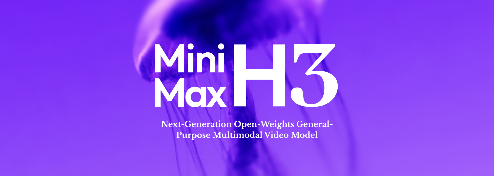

University of Chinese Academy of Sciences
Institute of Automation, Chinese Academy of Sciences
Ph.D. in Computer Science · Advisor: Prof. Jing Liu
Sep. 2023 — Jun. 2028
Expected
Ph.D. Student / Top Talent Intern @ MiniMax Hailuo
I am a Ph.D. student at the University of Chinese Academy of Sciences (UCAS) and the Institute of Automation, Chinese Academy of Sciences (CASIA), advised by Prof. Jing Liu. I expect to graduate in June 2028.
I am currently a Top Talent Intern at MiniMax Hailuo, contributing to multimodal understanding for MiniMax H3 and subsequent H-series models. I led dense omni-captioning development and released key in-house omni benchmarks for H-series understanding models.
My research focuses on omni-modal understanding and efficient video models.
Institute of Automation, Chinese Academy of Sciences
Ph.D. in Computer Science · Advisor: Prof. Jing Liu
Sep. 2023 — Jun. 2028
Expected
B.Eng. in Artificial Intelligence
Sep. 2019 — Jun. 2023
Jul. 2026 — Present
Top Talent Intern · Team Leader: Yucong Zhou

MiniMax H3Official introductionDec. 2025 — Mar. 2026
Research Intern · Team Leader: Haonan Lu
Video evaluation and inference for AndesVL; temporal process rewards for video GRPO, grounded reasoning, and streaming inference.
Aug. 2025 — Nov. 2025
Research Intern · Team Leaders: Jun Song, Di Zhang, Bo Zheng
Scalable video self-supervised learning and efficient understanding. Led LLM-side visual sparsity design for AdaSpark.
Dec. 2022 — Jul. 2023
Multimodal Algorithm Intern · Team Leader: Jiashi Feng
Video-language foundation models: model architecture, training infrastructure, and data for video retrieval, captioning, and question answering.
Selected first-author and co-first-author work. Full publication list on Google Scholar
Adaptive spatiotemporal sparsity for efficient long-video understanding, reducing FLOPs by up to 57% on hour-long videos while maintaining video performance.
ELVA explores encoder-free video-language modeling through native pretraining and efficient visual processing.
MiCo studies joint scaling across modalities, data, and model size for omni-modal pretraining.
Studying the scaling of video data in vision-language models.
A 27M video-text dataset and foundation model combining vision, audio, subtitles, and text.
State-routed distillation for agentic visual reasoning.
Temporal reasoning for video-language models.
Reasoning over streaming video.